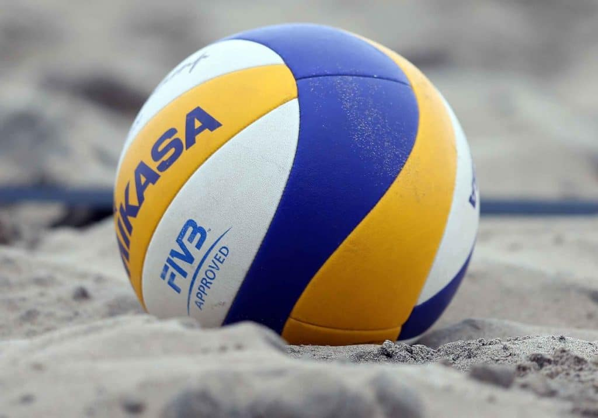
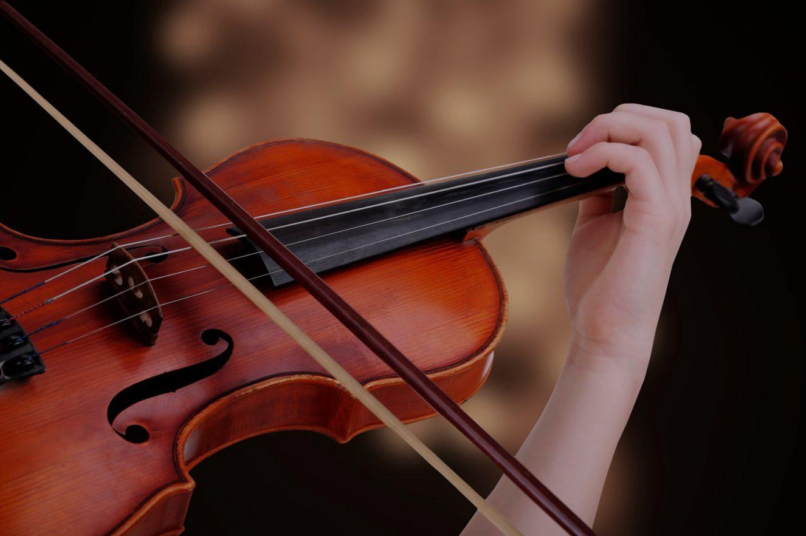
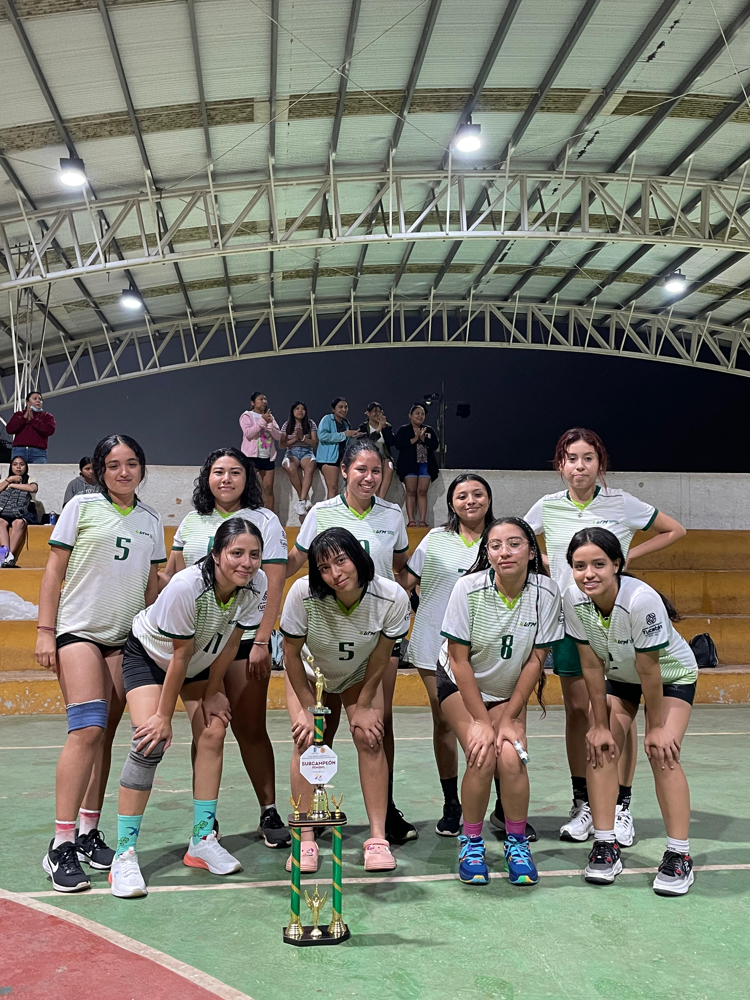
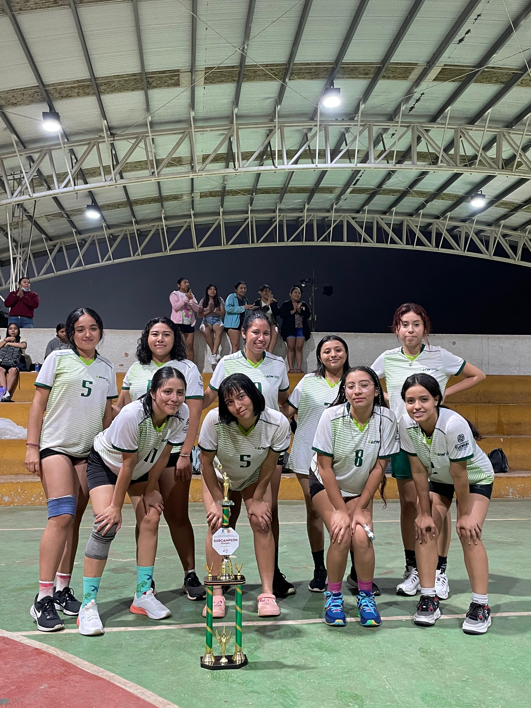

¿Quién soy?
Soy una joven de 18 años actualmente, estoy estudiando desarrollo en software multiplataforma en la UTM Mérida. Tengo demasiados amigos y todos son diferentes entre sí. Me gusta conocer gente nueva y en general me considero una persona extrovertida con la que puedes disfrutar el rato.
Actividades
Soy jugadora de volleyball desde hace años ya, me encanta el deporte, pues forma parte de mi vida, soy tan feliz estando cancha y es sorprendente lo increíble que es el deporte. Además de ello, sé tocar el violín, es mi instrumento principal con el cual también llevo años. Actualmente estoy comenzando a jugar básquet y estoy en duda si comemzar con el ukulele
 Amigos
Agradezco mucho que el deporte forma parte de mi vida, ya que hacer actividad física es bueno para la salud, pero sobre todo me hace inmensamente feliz. Acá dos fotos con mi grupo de amigos de prepa y de la universidad
 
